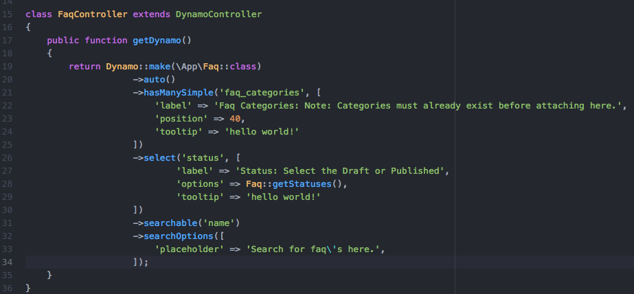

Deleting Categories¶
We’ve added a new feature in Dynamo where you can override the default delete button in the index view to make a bootstrap modal popup and give you the ability to delete an entire category at once. MySQL will not allow you to delete data from a table if that data is being used in a pivot table. This is likely true for other database types as well. In the Laravel framework, you can go to config->database to see what type of database your application is using. At our company, we use MySQl and Sequel Pro for all of our projects. Not sure if this feature will work or not if you’re not using MySQL in your project.
Anyway, below you can click the images to see an example. For the demonstration, I’ve created two Dynamo models and controllers with the php artisan make:dynamo command. The first is Faq, and the second is FaqCategory. After running these two commands to create these models, I write these database migration files and connect the two through a pivot table. After that, write the relationship on the model files, and then I implement the Dynamo Controllers with a ->hasManySimple() function and voila; we’ve given the user the ability to create Faqs for their website and attach them to categories... But what if at some point they want to delete a category? Before this feature, they would have to manually go detach all the Faqs from the category before the system would let them delete the category because MySQL will not let you “add or update a child row: a foreign key constraint fails”.
Taken from the official MySQL documentation:
Note
“Foreign key relationships involve a parent table that holds the central data values, and a child table with identical values pointing back to its parent. The FOREIGN KEY clause is specified in the child table. It will reject any INSERT or UPDATE operation that attempts to create a foreign key value in a child table if there is no a matching candidate key value in the parent table.”
php artisan make:dynamo Faq
php artisan make:dynamo FaqCategory
Schema::create('faqs', function (Blueprint $table) {
$table->increments('id');
$table->string('name');
$table->string('image');
$table->text('long_description');
$table->boolean('activated');
$table->integer('status');
$table->timestamps();
});
Schema::create('faq_categories', function (Blueprint $table) {
$table->increments('id');
$table->string('name');
$table->timestamps();
});
Schema::create('faq_faq_category', function (Blueprint $table) {
$table->integer('faq_id')->unsigned();
$table->foreign('faq_id')->references('id')->on('faqs');
$table->integer('faq_category_id')->unsigned();
$table->foreign('faq_category_id')->references('id')->on('faq_categories');
});
This function goes on the Faq.php file in the root of the app folder
public function faq_categories()
{
return $this->belongsToMany('App\FaqCategory');
}
This function goes on the FaqCategory.php file in the root of the app folder
public function faqs()
{
return $this->belongsToMany('App\Faq')->orderBy('name');
}

{kind=link}